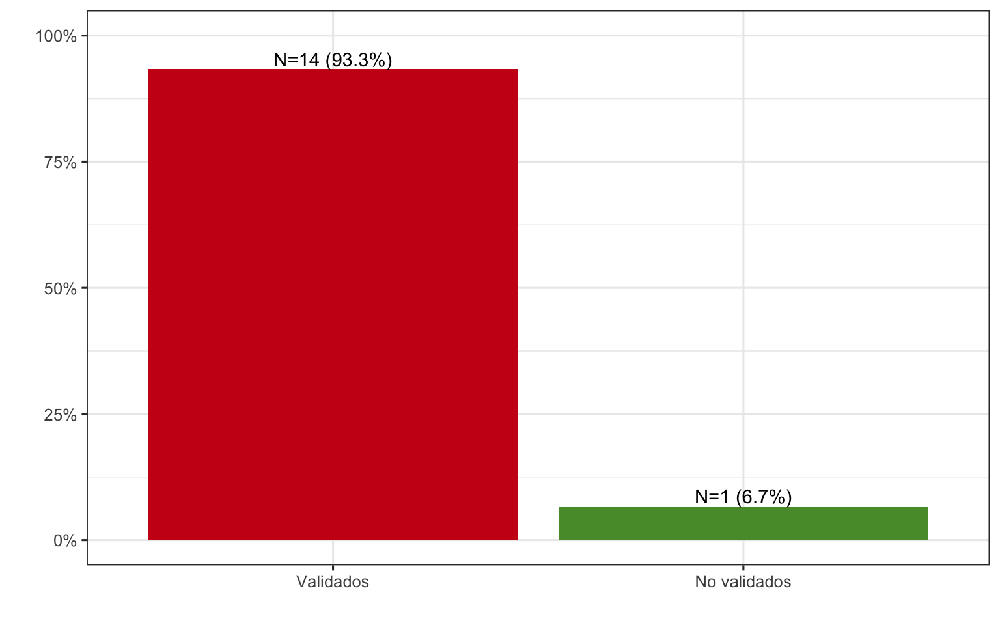
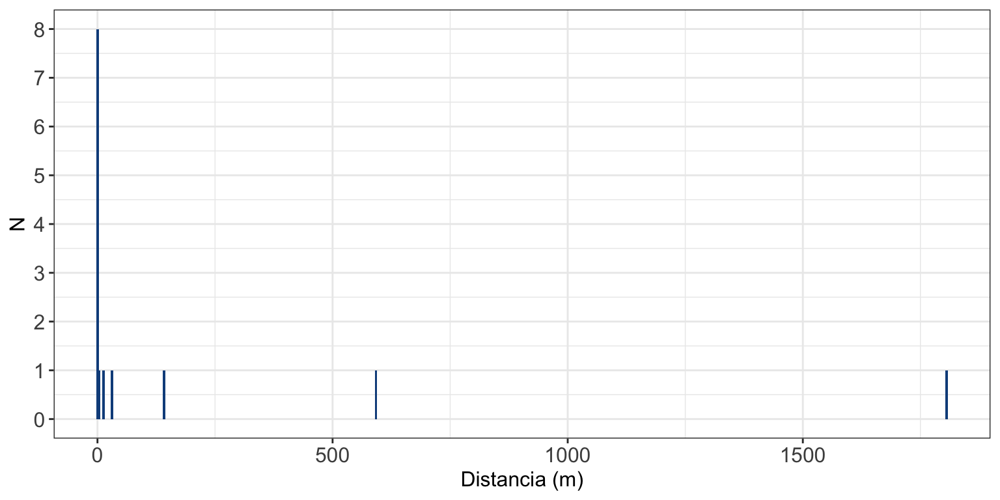
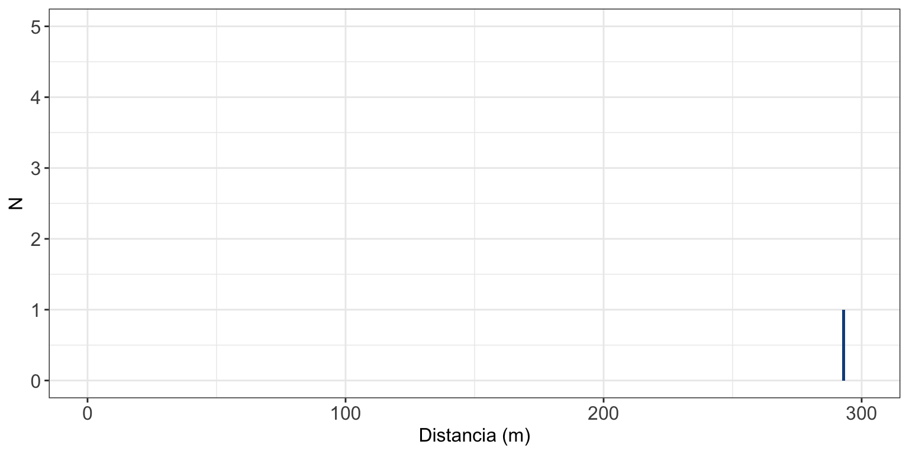

Validación de Coordenadas Geográficas
Material
Descarga del material en GitHub
Estructura del taller
1.Instalación de paquetes de R necesarios para el Taller
2.Importación de direcciones geocodificadas
3.Conversión a datos espaciales
4.Creación de kmls
5.Validacion con Google Earth (+ Cartociudad)
6.Importacion de direcciones validadas
7.Evaluación de la validación
8.Evaluación de la geocodificacion original mediante distancias
9.Exportación de direcciones validadas
1. Instalación de paquetes de R necesarios para el Taller
install.packages("devtools")
install.packages("scales")
install.packages("sf")
install.packages("tmaptools")
install.packages("tmap")
install.packages("ggplot2")
install.packages("sp")
install.packages("openxlsx")
install.packages("rgdal")
install.packages("data.table")
install.packages("kableExtra")
install.packages("ggrepel")2. Importación de direcciones geocodificadas
library("openxlsx")
datos<-read.xlsx("datos_para_validar.xlsx")
dim(datos)## [1] 15 10head(datos[,c("ID","lat",
"long","MUNICIPIO")])## ID lat long MUNICIPIO
## 1 101310252492 39.8917005520389 -5.54059461444984 Navalmoral de la Mata
## 2 101310099116 39.8923809620118 -5.53990495944629 Navalmoral de la Mata
## 3 101310252352 39.8924218622791 -5.54235640882115 Navalmoral de la Mata
## 4 101310252684 39.8936756512104 -5.53923222968359 Navalmoral de la Mata
## 5 101310001539 39.8919308369386 -5.54131087859412 Navalmoral de la Mata
## 6 101310252013 39.890796 -5.536885 Navalmoral de la Mata3. Conversión a datos espaciales
https://www.mapa.gob.es/es/cartografia-y-sig/ide/directorio_datos_servicios/EPSG.aspx
library("sf")
# EPSG:4326
st_crs(4326)## Coordinate Reference System:
## User input: EPSG:4326
## wkt:
## GEOGCRS["WGS 84",
## ENSEMBLE["World Geodetic System 1984 ensemble",
## MEMBER["World Geodetic System 1984 (Transit)"],
## MEMBER["World Geodetic System 1984 (G730)"],
## MEMBER["World Geodetic System 1984 (G873)"],
## MEMBER["World Geodetic System 1984 (G1150)"],
## MEMBER["World Geodetic System 1984 (G1674)"],
## MEMBER["World Geodetic System 1984 (G1762)"],
## MEMBER["World Geodetic System 1984 (G2139)"],
## ELLIPSOID["WGS 84",6378137,298.257223563,
## LENGTHUNIT["metre",1]],
## ENSEMBLEACCURACY[2.0]],
## PRIMEM["Greenwich",0,
## ANGLEUNIT["degree",0.0174532925199433]],
## CS[ellipsoidal,2],
## AXIS["geodetic latitude (Lat)",north,
## ORDER[1],
## ANGLEUNIT["degree",0.0174532925199433]],
## AXIS["geodetic longitude (Lon)",east,
## ORDER[2],
## ANGLEUNIT["degree",0.0174532925199433]],
## USAGE[
## SCOPE["Horizontal component of 3D system."],
## AREA["World."],
## BBOX[-90,-180,90,180]],
## ID["EPSG",4326]]# st_as_sf
datos_sf <- sf::st_as_sf(datos,
coords = c("long","lat"),
crs = 4326)4. Creación de kmls
# st_write
st_write(datos_sf, "datos_para_validar.kml",
driver = "kml", delete_dsn = TRUE)## Deleting source `datos_para_validar.kml' using driver `kml'
## Writing layer `datos_para_validar' to data source
## `datos_para_validar.kml' using driver `kml'
## Writing 15 features with 8 fields and geometry type Point.
6. Importacion de direcciones validadas
library("sf")
library("data.table")
library("openxlsx")
library("dplyr")
library("gtsummary")
library("kableExtra")
kbl(datos)| ID | TIPO_VIA | DIRECCION | NUM | CP | COD_MUNI | MUNICIPIO | PROVINCIA | lat | long |
|---|---|---|---|---|---|---|---|---|---|
| 101310252492 | PLAZA | ESPAÑA | 2 | 10300 | 1100003617 | Navalmoral de la Mata | Cáceres | 39.8917005520389 | -5.54059461444984 |
| 101310099116 | CALLE | LEPANTO | 15 | 10300 | 1100003617 | Navalmoral de la Mata | Cáceres | 39.8923809620118 | -5.53990495944629 |
| 101310252352 | CALLE | GOYA | 5 | 10300 | 1100003617 | Navalmoral de la Mata | Cáceres | 39.8924218622791 | -5.54235640882115 |
| 101310252684 | CALLE | AMAPOLA | 2 | 10300 | 1100003617 | Navalmoral de la Mata | Cáceres | 39.8936756512104 | -5.53923222968359 |
| 101310001539 | CALLE | LUCHANA | 3 | 10300 | 1100003617 | Navalmoral de la Mata | Cáceres | 39.8919308369386 | -5.54131087859412 |
| 101310252013 | CALLE | PUERTO LAPICE | 99 | 10300 | 1100003617 | Navalmoral de la Mata | Cáceres | 39.890796 | -5.536885 |
| 101310231851 | CALLE | SAN ANDRES | 41 | 10300 | 1100003617 | Navalmoral de la Mata | Cáceres | 39.8904526051037 | -5.54406190563242 |
| 101310158144 | CALLE | CALVO SOTELO | 34 | 10300 | 1100003617 | Navalmoral de la Mata | Cáceres | 39.8939985258114 | -5.5412597242568 |
| 101310235801 | PASEO | ESTACION | 9 | 10300 | 1100003617 | Navalmoral de la Mata | Cáceres | 39.8928495816429 | -5.54523156568416 |
| 101310071395 | AVENIDA | ANGUSTIAS | 36 | 10300 | 1100003617 | Navalmoral de la Mata | Cáceres | 39.892185 | -5.531003 |
| 101310252371 | CALLE | MODESTO MARCOS | 1 | 10300 | 1100003617 | Navalmoral de la Mata | Cáceres | 39.894038 | -5.536083 |
| 101310174431 | CALLE | JAZMIN | 28 | 10300 | 1100003617 | Navalmoral de la Mata | Cáceres | 39.8919167400655 | -5.53701616166649 |
| 101310251600 | CALLE | JOAQUIN COSTA | 8 | 10300 | 1100003617 | Navalmoral de la Mata | Cáceres | 39.8906135765554 | -5.54129102426134 |
| 101310251864 | CALLE | DEPORTES | 39 | 10300 | 1100003617 | Navalmoral de la Mata | Cáceres | 39.8880029606681 | -5.53929996212349 |
| 101310189715 | CARRETERA | JARANDILLA | 29 | 10300 | 1100003617 | Navalmoral de la Mata | Cáceres | 39.897994 | -5.54358 |
# n_val<-st_read("datos_para_validar.kml")
n_val <- datos_sf
head(n_val[,c("ID","geometry")])## Simple feature collection with 6 features and 1 field
## Geometry type: POINT
## Dimension: XY
## Bounding box: xmin: -5.542356 ymin: 39.8908 xmax: -5.536885 ymax: 39.89368
## Geodetic CRS: WGS 84
## ID geometry
## 1 101310252492 POINT (-5.540595 39.8917)
## 2 101310099116 POINT (-5.539905 39.89238)
## 3 101310252352 POINT (-5.542356 39.89242)
## 4 101310252684 POINT (-5.539232 39.89368)
## 5 101310001539 POINT (-5.541311 39.89193)
## 6 101310252013 POINT (-5.536885 39.8908)# Capa validada
val<-st_read("datos_validados.kml")## Reading layer `datos_para_validar' from data source
## `/Users/celiatalavan/Desktop/CIBER-DATA/TALLERES/VICA/final/datos_validados.kml'
## using driver `KML'
## Simple feature collection with 15 features and 2 fields
## Geometry type: POINT
## Dimension: XYZ
## Bounding box: xmin: -5.552171 ymin: 39.888 xmax: -5.53699 ymax: 39.89843
## z_range: zmin: 0 zmax: 0
## Geodetic CRS: WGS 84val<-st_zm(val, drop = TRUE, what = "ZM")
head(val)## Simple feature collection with 6 features and 2 fields
## Geometry type: POINT
## Dimension: XY
## Bounding box: xmin: -5.542356 ymin: 39.88816 xmax: -5.53699 ymax: 39.89368
## Geodetic CRS: WGS 84
## Name Description geometry
## 1 101310252492 VAL POINT (-5.54091 39.89156)
## 2 101310099116 VAL POINT (-5.539872 39.89239)
## 3 101310252352 VAL POINT (-5.542356 39.89242)
## 4 101310252684 VAL POINT (-5.539232 39.89368)
## 5 101310001539 VAL POINT (-5.541311 39.89193)
## 6 101310252013 NOVAL POINT (-5.53699 39.88816)7. Evaluación de la validación
- Porcentajes de coordenadas validadas / No validadas / sin Check
data <- val %>%
dplyr::count(Description) %>%
dplyr::mutate(porcentaje = n / sum(n) * 100)
data$Description<- factor(data$Description, levels = c("VAL","NOVAL",""),
labels = c("Validados","No validados","Sin Check"))
library("ggplot2")
library("ggrepel")
ggplot(data,aes(x=Description,y=porcentaje,fill=Description))+
geom_bar(stat = "identity")+
scale_fill_manual(values=c("#CC1619","#579837","#7F8A8F"))+
labs(x="", y= "") +
geom_text(aes(label = paste0("N=",n," (",round(porcentaje, 1), "%)")),
vjust = -0.25) +
scale_y_continuous(labels = scales::percent_format(scale = 1),limits=c(0,100))+
labs(fill = "")+
theme_bw(base_size = 12)+
theme(legend.position = "none")
8. Evaluación de la geocodificacion original mediante distancias
colnames(val)[1]<-"ID"
res<-st_distance(n_val,val)
head(res)## Units: [m]
## [,1] [,2] [,3] [,4] [,5] [,6] [,7]
## [1,] 31.22911 98.658619 170.3682 248.4816 66.25639 499.2550 326.7459
## [2,] 125.40403 3.144393 209.1935 154.9817 129.96975 530.8123 414.4347
## [3,] 156.37979 212.012573 0.0000 300.7949 104.58301 658.6512 262.9078
## [4,] 275.56424 152.698136 300.7949 0.0000 262.85059 642.0708 546.0960
## [5,] 53.74429 133.111013 104.5830 262.8506 0.00000 558.0088 286.5403
## [6,] 353.69575 310.580897 500.5822 377.6657 398.12451 292.8448 613.4992
## [,8] [,9] [,10] [,11] [,12] [,13] [,14] [,15]
## [1,] 273.8002 415.7204 991.3339 155.50582 306.2414 134.6804 425.7327 843.2094
## [2,] 227.0827 457.4129 1046.5122 221.86975 251.8048 229.3593 489.5411 807.7700
## [3,] 204.3696 249.8599 837.3381 64.83066 459.0510 220.6623 556.2684 709.4904
## [4,] 187.1283 520.0008 1111.9562 339.22334 272.0234 383.1230 630.8019 730.7083
## [5,] 240.3810 349.7444 928.4623 94.16146 366.4074 146.4827 469.2492 793.5155
## [6,] 529.0892 747.8057 1317.3472 485.31231 125.1222 376.4538 372.7033 1103.3019distancia<-diag(res)
val$"dist"<-round(as.numeric(diag(res)))- Distancias entre coordenadas validadas y originales
ggplot(val[val$"Description"%in%"VAL",],aes(x=dist))+
geom_bar(fill="#104E8B",width = 5)+
scale_y_continuous(breaks = seq(0,10,1))+
labs(x="Distancia (m)",y="N")+
theme_bw()+
theme(axis.text=element_text(size=12),axis.title=element_text(size=12))
df_val<-data.table(val[val$"Description"%in%"VAL",])
df_t<-df_val[,.(Media=mean(dist),Mediana=median(dist),Min=min(dist),Max=max(dist),
Q1=quantile(df_val$dist,probs=seq(0,1,1/4))[2],Q3=quantile(df_val$dist,probs=seq(0,1,1/4))[4])]
kbl(df_t,align="c")| Media | Mediana | Min | Max | Q1 | Q3 |
|---|---|---|---|---|---|
| 184.7857 | 0 | 0 | 1806 | 0 | 26.5 |
- Distancias entre coordenadas no validadas y originales
ggplot(val[val$"Description"%in%"NOVAL",],aes(x=dist))+
geom_bar(fill="#104E8B",width = 1)+
scale_x_continuous(limits=c(0,300))+
scale_y_continuous(limits=c(0,5))+
labs(x="Distancia (m)",y="N")+
theme_bw()+
theme(axis.text=element_text(size=12),axis.title=element_text(size=12))
9. Exportación de direcciones validadas
colnames(val)[1]<-"ID"
coordenadas_val<-st_coordinates(val)
val$lat_val<-coordenadas_val[,"Y"]
val$long_val<-coordenadas_val[,"X"]
val$geometry<-NULL
datos_finales<-as.data.table(merge(datos,val,by="ID",all=T,sort=FALSE))
kbl(datos_finales)| ID | TIPO_VIA | DIRECCION | NUM | CP | COD_MUNI | MUNICIPIO | PROVINCIA | lat | long | Description | dist | lat_val | long_val |
|---|---|---|---|---|---|---|---|---|---|---|---|---|---|
| 101310252492 | PLAZA | ESPAÑA | 2 | 10300 | 1100003617 | Navalmoral de la Mata | Cáceres | 39.8917005520389 | -5.54059461444984 | VAL | 31 | 39.89156 | -5.540910 |
| 101310099116 | CALLE | LEPANTO | 15 | 10300 | 1100003617 | Navalmoral de la Mata | Cáceres | 39.8923809620118 | -5.53990495944629 | VAL | 3 | 39.89239 | -5.539872 |
| 101310252352 | CALLE | GOYA | 5 | 10300 | 1100003617 | Navalmoral de la Mata | Cáceres | 39.8924218622791 | -5.54235640882115 | VAL | 0 | 39.89242 | -5.542356 |
| 101310252684 | CALLE | AMAPOLA | 2 | 10300 | 1100003617 | Navalmoral de la Mata | Cáceres | 39.8936756512104 | -5.53923222968359 | VAL | 0 | 39.89368 | -5.539232 |
| 101310001539 | CALLE | LUCHANA | 3 | 10300 | 1100003617 | Navalmoral de la Mata | Cáceres | 39.8919308369386 | -5.54131087859412 | VAL | 0 | 39.89193 | -5.541311 |
| 101310252013 | CALLE | PUERTO LAPICE | 99 | 10300 | 1100003617 | Navalmoral de la Mata | Cáceres | 39.890796 | -5.536885 | NOVAL | 293 | 39.88816 | -5.536990 |
| 101310231851 | CALLE | SAN ANDRES | 41 | 10300 | 1100003617 | Navalmoral de la Mata | Cáceres | 39.8904526051037 | -5.54406190563242 | VAL | 0 | 39.89045 | -5.544062 |
| 101310158144 | CALLE | CALVO SOTELO | 34 | 10300 | 1100003617 | Navalmoral de la Mata | Cáceres | 39.8939985258114 | -5.5412597242568 | VAL | 13 | 39.89409 | -5.541357 |
| 101310235801 | PASEO | ESTACION | 9 | 10300 | 1100003617 | Navalmoral de la Mata | Cáceres | 39.8928495816429 | -5.54523156568416 | VAL | 0 | 39.89285 | -5.545232 |
| 101310071395 | AVENIDA | ANGUSTIAS | 36 | 10300 | 1100003617 | Navalmoral de la Mata | Cáceres | 39.892185 | -5.531003 | VAL | 1806 | 39.89247 | -5.552171 |
| 101310252371 | CALLE | MODESTO MARCOS | 1 | 10300 | 1100003617 | Navalmoral de la Mata | Cáceres | 39.894038 | -5.536083 | VAL | 592 | 39.89184 | -5.542408 |
| 101310174431 | CALLE | JAZMIN | 28 | 10300 | 1100003617 | Navalmoral de la Mata | Cáceres | 39.8919167400655 | -5.53701616166649 | VAL | 0 | 39.89192 | -5.537016 |
| 101310251600 | CALLE | JOAQUIN COSTA | 8 | 10300 | 1100003617 | Navalmoral de la Mata | Cáceres | 39.8906135765554 | -5.54129102426134 | VAL | 0 | 39.89061 | -5.541291 |
| 101310251864 | CALLE | DEPORTES | 39 | 10300 | 1100003617 | Navalmoral de la Mata | Cáceres | 39.8880029606681 | -5.53929996212349 | VAL | 0 | 39.88800 | -5.539300 |
| 101310189715 | CARRETERA | JARANDILLA | 29 | 10300 | 1100003617 | Navalmoral de la Mata | Cáceres | 39.897994 | -5.54358 | VAL | 142 | 39.89843 | -5.545139 |
write.xlsx(datos_finales,file="datos_finales.xlsx")